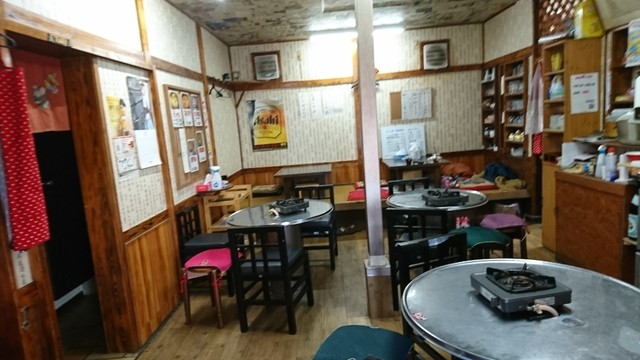

「アリラン」は、韓国で最も親しまれる民謡の名。峠を越えた先に広がる、あたたかな故郷を唄ったものです。
その名のとおり、私たちが大切にしているのは、家庭の食卓の味。彩りのナムル、やさしいわかめスープ、香ばしいチヂミ。素材の持ち味を、余計な飾りなくお出しします。
沼津・大手町で長く続けてきた、小さな韓国食堂。ゆっくりお過ごしいただける一軒です。


| 店名 | アリラン食堂（ありらん しょくどう） |
|---|---|
| ジャンル | 韓国料理・焼肉 |
| 住所 | 〒410-0801 静岡県沼津市大手町4-8-1 |
| 電話 | 055-951-5170 |
| 営業時間 | 月〜土 17:00〜23:00／ランチ 火〜木 11:30〜13:30 |
| 定休日 | 日曜・祝日 |
| アクセス | JR沼津駅 南口より徒歩約7分 |
| お支払い | 現金／PayPay |